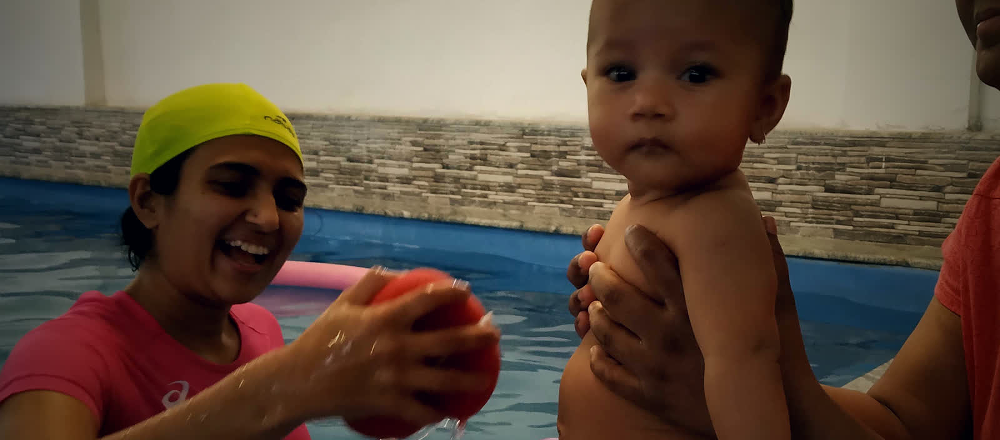

Kharadi, Pune
Physiotherapy that happens in warm water.
Movement that hurts on land is possible in a pool held at 32 °C — all year, so your recovery never stops for the weather.
- Temperature controlled
- 1:1 with your therapist
- Opposite Radisson Blu
Is this for you?
Six reasons people come to us.
If your condition is here, water is likely to let you move sooner, and with less pain, than a programme on land.
-
After surgery
Knee and hip replacement, ligament repair, spinal recovery
-
Arthritis & joint pain
Move freely without loading a painful joint
-
Sports injury
Return to load safely, and earlier than on land
-
Children
Paediatric therapy in water that feels like play
-
Autism & sensory needs
A predictable, regulating sensory environment
-
Neuro rehabilitation
Stroke and neurological recovery, with a neuro-physio specialist
What is aquatic therapy?
Not swimming. Not a spa.
A physiotherapist works with you in chest-deep warm water. Buoyancy carries most of your weight, so a joint that cannot bear load on land can still be moved — and water resists from every direction, so the same movement rebuilds strength as it goes.
- ~90%of body weight offloaded in chest-deep water
- 32 °Cwarmth that eases muscle guarding and pain
- 1:1your therapist in the water with you, every session
Why not just any pool?
We built this because our patients kept stopping.
Aquatic therapy worked — but patients dropped out every time the water turned cold, public pools were not clean enough to recover in, and no pool nearby was built around a patient. So we built one that was.
-
Temperature controlled
Held warm through the year, so a course of treatment is not interrupted by the season.
-
Clinical hygiene
Water treated and tested to clinical standards — which matters when you are recovering.
-
Built for patients
Accessible entry, private changing, and a calm room — not a public swimming lane.

Children in the water
Where therapy looks like play.
For a child with sensory needs, warm water is a predictable, regulating place to be — quiet, consistent, and forgiving of movement that is hard on land. Sessions run one‑to‑one at your child's pace, with a parent in the water whenever that helps.
- A parent can be in the water throughout
- One‑to‑one, never a group class
- Led by a neuro‑physiotherapy specialist
Who you'll work with
In the water with you, every session.
Dr. Rajashree Fadnavis
Co-Founder & Aquatic Physiotherapist
- MPTh, Neuro-Physiotherapy
- Practising since 2015
- Aquatic therapy specialist
Rajashree has been practising since 2015, with most of those years spent doing hands-on aquatic therapy in pools across Pune — long enough to watch patients improve in the water and then stop coming when the water got cold. PhysioAqua is her answer to that.
Her Master's is in Neuro-Physiotherapy, which is why neurological and sensory work — stroke recovery, paediatric and autism sessions — is handled here rather than referred on.
Visit us
Kharadi, opposite Radisson Blu.
- Address
- 36/6 USHAS, Lane 3, Prakash Pathare Nagar, Kharadi, Pune 411014
- Plus Code
HW4P+4MPune, Maharashtra- Hours
- Monday – Saturday, 10:00 am – 8:00 pm · Sunday closed
- Phone
- +91 9172 777 456
- info@physioaqua.com